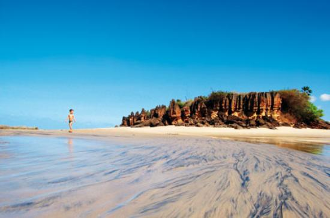

Essas cidades são muito bem conhecidas por ter ótimos pontos turisticos, principalmente as belas praias que se tem lá. Pontos turísticos belissimos como a praia do tourinhos em São Miguel do Gostoso, e a praia do farol em Caiçara do Norte.
A praia do farol santo alberto fica localizada entre as cidades de caiçara do norte e são bento do norte.É uma das mais belas praias do RN e considerada a que tem o maior número de barcos pesqueiros do Brasil, em proporção ao tamanho do município. O Farol de Santo Alberto tem 42 metros de altura,
Praia do Serafim, um paraíso potiguar localizado no litoral de São Bento do Norte/RN, onde a presença do homem é quase uma raridade, a não ser, pela existência de alguns poucos ranchos de pescadores e a circulação diária de bugres e carros 4 x 4 carregados de turistas. Para a navegação o Serafim passa despercebido, apesar de ficar entre o Farol de Santo Alberto e a Ponta dos Três Irmãos, que dá início a carta náutica até Cabedelo/PB, porém, o navegador com um olhar apurado não deixará de perceber que a bela e paradisíaca baía oferece um excelente fundeadouro.
Praia do Tourinhos é famosa pelo seu lindo pôr do sol, conhecida como a melhor praia de São Miguel do Gostoso. Com seu mar calmo e piscinas naturais que se formam quando a maré tá baixa.
A Praia do Santo Cristo é a melhor para práticas esportivas aquáticas, tais como kitesurf e windsurf. O vento constante que lá possui ajuda bastante as praticantes desse esporte vim.
O terminal turístico de caiçara do norte, fica no bairro da projetada, zona periférica da cidade de caiçara do norte. fica de frente ao mar, com direito a um lindo por do sol. eventualmente, nos fins de semana, a comunidade local se reune e prestigiam uma musica aovivo ou paredões.
A Rua da Praia da Xêpa é bastante conhecida por ter restaurantes que apresentam uma bela vista quando se está de noite, restaurantes com preços ótimos e uma culinária impecável.